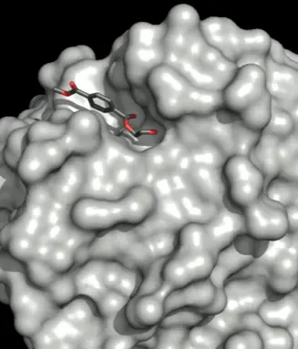

Drug Discovery
For a portein like an enzyme, an active site is like a cave and its opening or mouth. A drug's 3D structure (and functional groups' positions) needs to be able to fit through the cave's mouth and then have certain of the drug's functional groups align with certain parts in the cave (like stalagtites and stalagmites), the protein's active sites. When that happens, a chemical reaction occurs. The closer the parts of the drug are to where to where they should be relative to the active site, the better the chemical reaction.
Like the cave example for changing a drug's shape, if the cave
changes shape, a certain drug can enter the cave and have the
stalagtites and stalagmites be in better positions to the drug.
The stalagtites and stalagmites are the functional groups of
the protein's active site. Changing the protein's shape can
change the locations of those functional groups and/or the
shape of the active site's opening.
Manipulating the structure of proteins and drug molecules
accelerates the discovery of new and more effective drugs.
When software programs simulate that, developing new medications
takes much less time than before.
Companies that use bioinformatics: